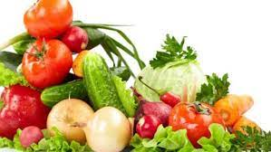

Frutas
Se denomina fruta a aquellos frutos comestibles obtenidos de plantas cultivadas o silvestres que, por su sabor generalmente dulce-acidulado, su aroma intenso y agradable y sus propiedades nutritivas.

Verduras
Las verduras son hortalizas cuyo color predominante es el verde. Sin embargo, el uso popular suele extender su significado a otras partes comestibles de las plantas, como hojas, inflorescencias y tallos.